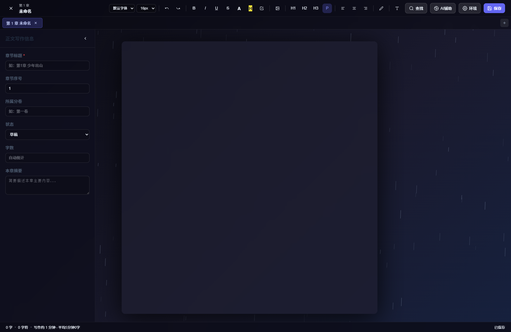
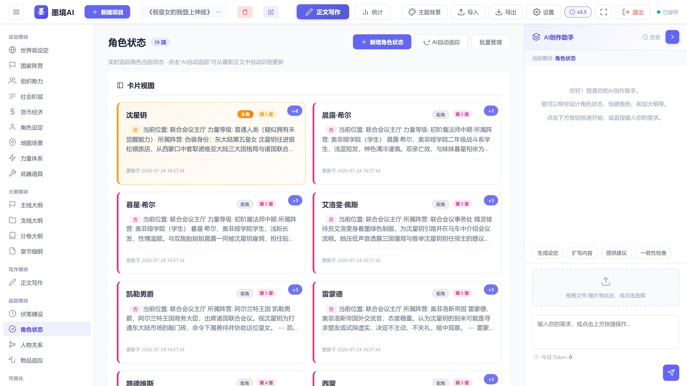
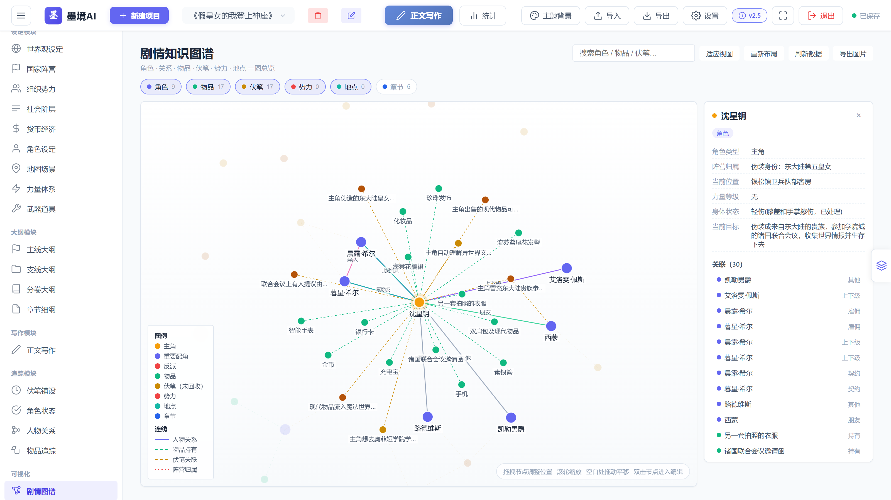
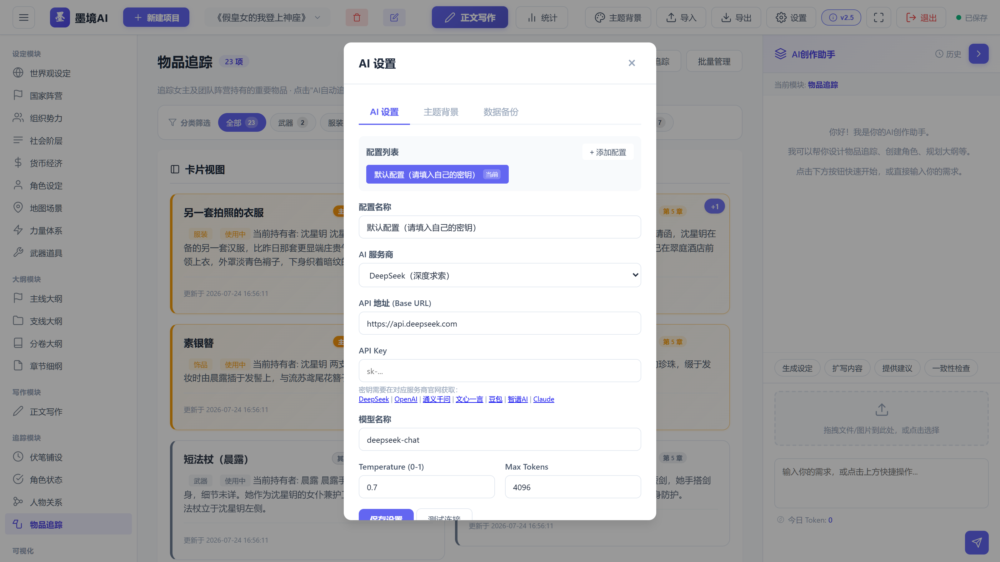
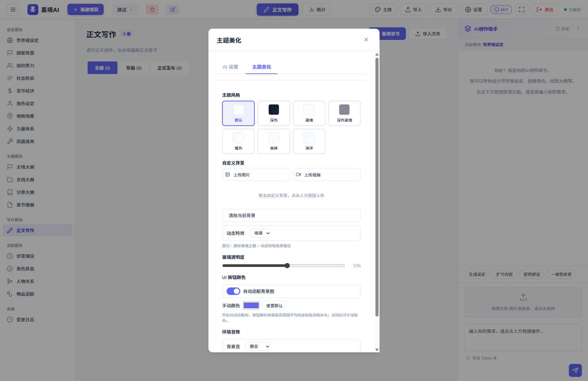
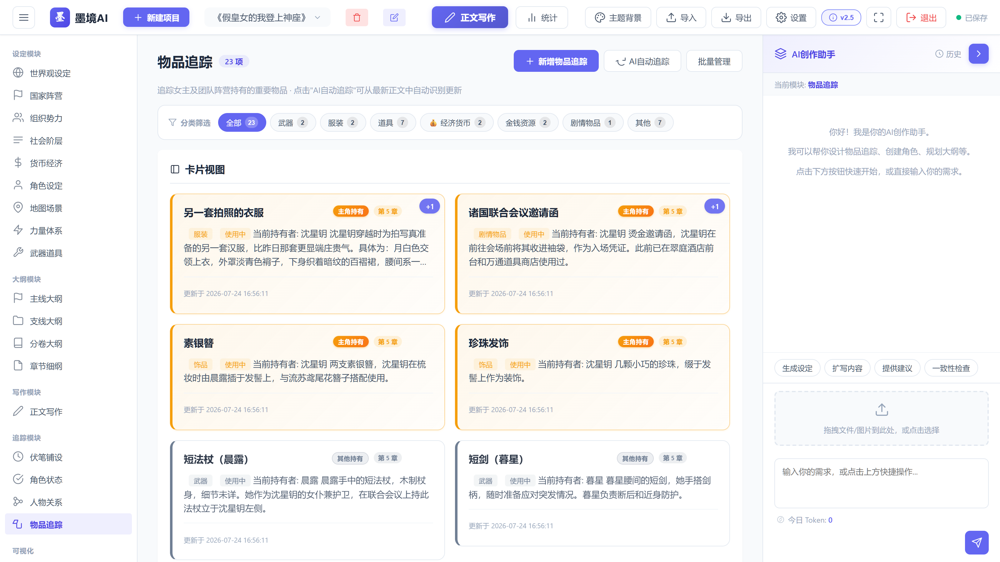
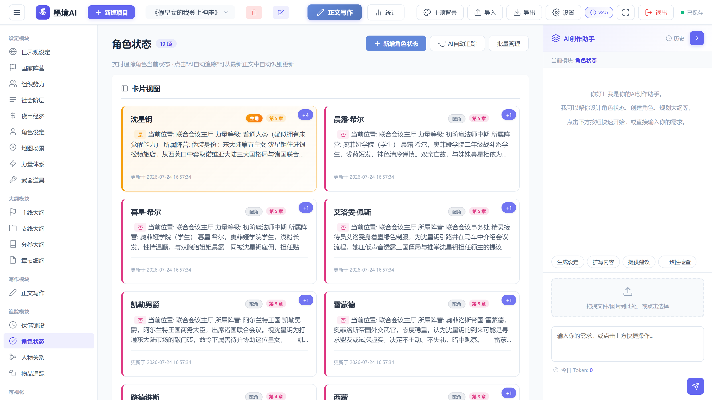

沉浸式网文创作辅助系统
AI驱动的全能创作工具，让灵感与技术在墨色之境中交融
从灵感到成稿，墨境AI陪伴你走过创作的每一步
把角色、关系、物品、伏笔、势力、地点、章节自动汇总成一张可交互的关系网络，全局脉络一图看清。
每次启动与每天首次保存前自动备份，设置面板内一键恢复，稿件安全无忧。
接入 DeepSeek、OpenAI 等主流大模型，支持命令式操作所有模块。智能续写、角色生成、情节推演，让AI成为你的创作搭档。
专注创作，心无旁骛。全屏沉浸式编辑器，搭配专业级环境音效与高清动态特效，营造最佳写作氛围。
自动追踪角色状态变化，主角与配角一目了然。人物关系网络可视化，让复杂角色关系不再混乱。
精细追踪每一件物品的归属与流转，货币变动精确记录。伏笔回收率统计，确保故事逻辑无懈可击。
覆盖网文创作的全流程，从世界观构建到正文写作，每个环节都有专属工具。
7种精美主题风格，玻璃拟态、深色模式、暖色森林海洋随心切换。动态背景与音效打造专属创作空间。
精心打磨的每一处界面细节







每一次更新都让创作更顺畅
Windows 便携版，开箱即用，无需安装 Python 环境
v2.5 · 约 53.2 MB
支持 Windows 10 / 11
下载便携版压缩包，解压到任意目录
双击「墨境AI.exe」，程序自动打开浏览器
在设置中填入API地址、密钥和模型名称
新建项目，开启你的网文创作之旅
有问题或建议？欢迎随时联系